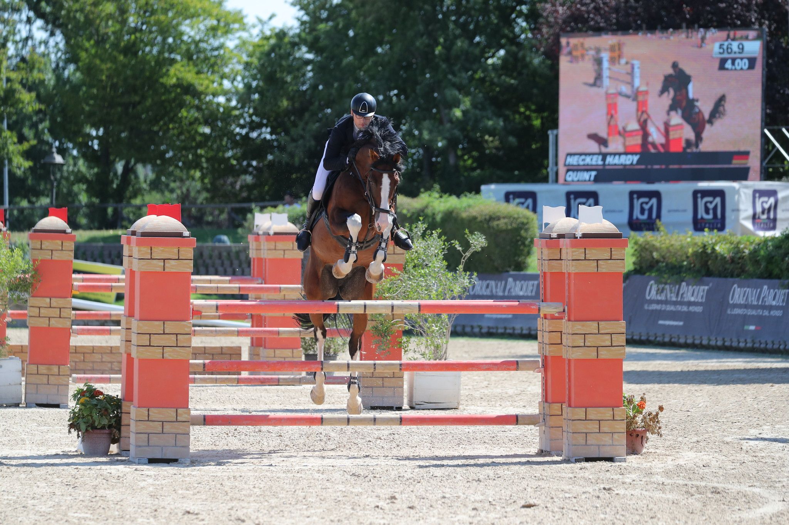

Niklaus Rutschi y Amar des Brimbelles Z ganan la 1,45 m del CSI3* Riviera Resort
El suizo Niklaus Rutschi, con Amar des Brimbelles Z, se impuso en la prueba de 1,45 m del ranking Longines del CSI3* Riviera Resort, en San Giovanni in Marignano (Italia).

Uso editorial autorizado FEI
Rutschi cerró la prueba de dos fases sin penalizaciones y con un tiempo de 28,11 s, el mejor de la CSI3* H145 Longines Ranking Two Phases, según la clasificación oficial.
La segunda plaza fue para el italiano Giacomo Casadei con Kingly Dream SV, también con 0 puntos y 28,99 s. El tercer puesto quedó compartido entre dos binomios que firmaron exactamente el mismo registro, 0 puntos y 29,35 s: el polaco Marek Lewicki con Quaid Casio y el italiano Antonio Maria Garofalo con Tailormade Carem Sandy.
En la otra prueba destacada de la jornada, la CSI3* H140 Jump Off, sobre 1,40 m, ganó el italiano Elia Matteo Simonetti con Laville, sin faltas y en 43,61 s. Casadei repitió en la segunda posición, esta vez con Kannantos (0 puntos, 45,79 s), y el austriaco Wolfgang Ötschmaier completó el podio con Lebouche (0 puntos, 47,21 s).
El concurso se celebra del 21 al 25 de octubre en San Giovanni in Marignano y reúne pruebas de nivel CSI3*, CSI2*, CSI1*, caballos jóvenes y ponis.
Por Lucía Valdeolmos